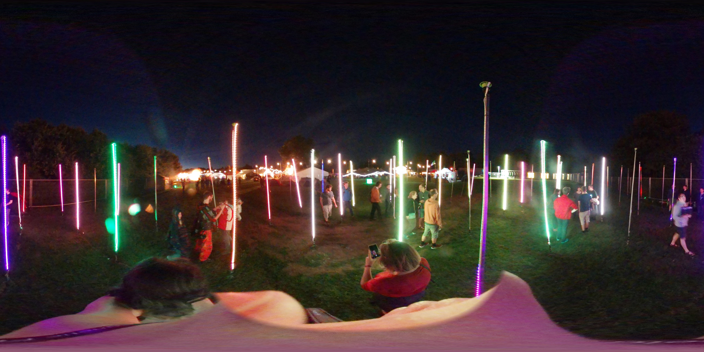
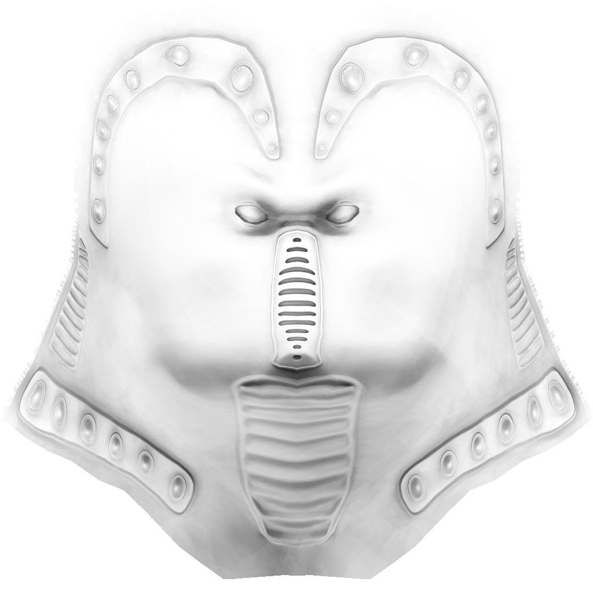
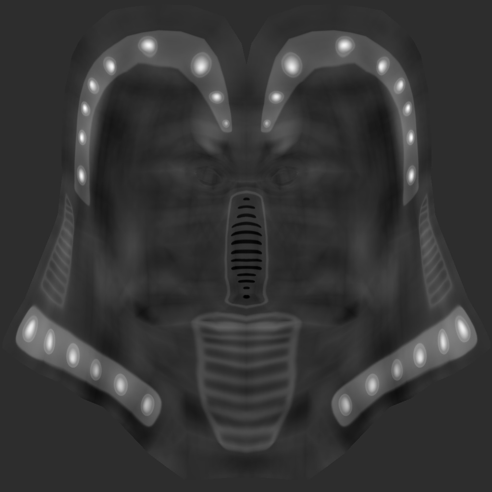
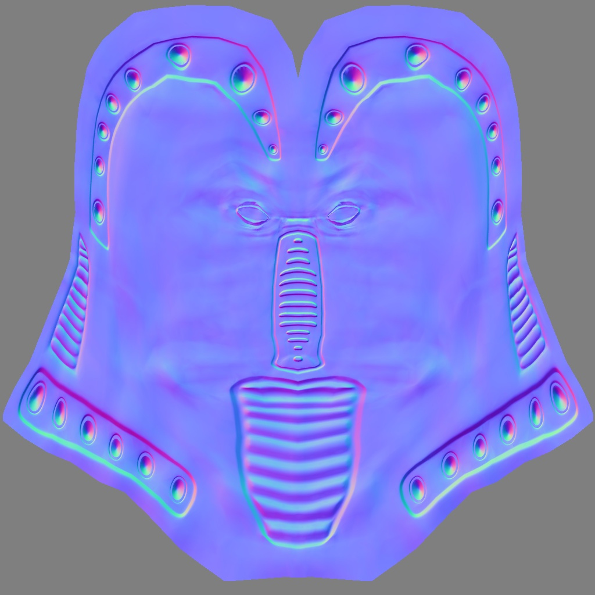

<a-scene inspector stats physics="debug: true">

	<!-- Assets -->

	<a-assets>
		

		
		
		
		<a-asset-item id="ninja-model-js" src="a-frame-assets/ninja/NinjaLo_bin.js"></a-asset-item>

		
	</a-assets>

	<a-entity light position="1 1 1"></a-entity>
	<a-entity light="type: ambient; intensity: 0.1;"></a-entity>

	<a-entity look-controls position="0 1 -5">
		<a-entity
			position="-2 0 0"
			scale="0.15 0.15 0.15"
			material="color: lightpink; metalness:0.8; roughness:0.6; sphericalEnvMap: #night-sphere; envMapIntensity: 1.0; normalMap: #normal; normalScale: 1 -1; ambientOcclusionMapIntensity: 1.0; ambientOcclusionMap: #ao; displacementMap: #displacement; displacementScale: 2.436143; displacementBias: -0.428408;"
			bin-model="#ninja-model-js"
		></a-entity>

		<a-entity
			geometry="primitive: torusKnot;"
			position="2 0 0"
			material="color: lightpink; metalness:0.8; roughness:0.6; sphericalEnvMap: #night-sphere;"
		></a-entity>
	</a-entity>

	<a-ocean-plane material="normalMap: #water-normal; sphericalEnvMap: #night-sphere;" position="0 -2 0" ></a-ocean-plane>

	<a-sky src="#night-sphere"></a-sky>

</a-scene>

<!-- Pay no attention to that man behind the curtain -->
<!-- This script is just loading the demo model from the THREE.js examples -->

<script>

AFRAME.registerComponent('bin-model', {

	dependencies: ['material'],

	schema: {
		type: 'src'
	},

	init: function () {
		this.loader = new THREE.BinaryLoader();
		this.el.getOrCreateObject3D('mesh', THREE.Mesh);
	},

	update: function () {
		var url = this.data;
		var self = this;
		var el = this.el;

		if (!url) { return; }

		this.loader.load( url, function( geometry ) {
			var mesh = el.getObject3D('mesh');
			geometry.faceVertexUvs[ 1 ] = geometry.faceVertexUvs[ 0 ]; // 2nd set of UVs required for aoMap
			mesh.geometry = geometry;
			mesh.material = el.components.material.material;
			el.emit('model-loaded', {format: 'bin', model: mesh});
		} );
	},

	remove: function () {
		if (this.getObject3D('mesh')) this.el.removeObject3D('mesh');
	}
});
</script>